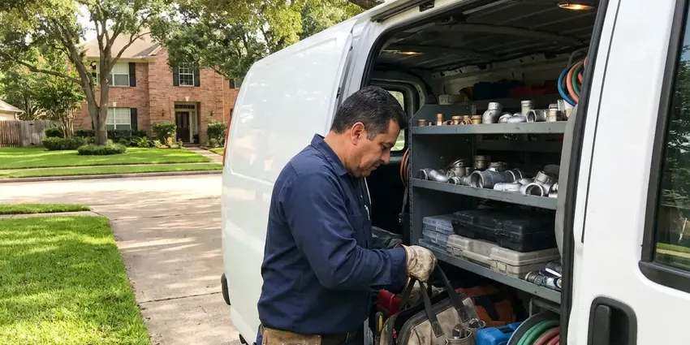

Hydrojet Plumbing in Cheat Lake, WV
GJK Plumbing provides expert hydrojet plumbing in Cheat Lake, WV, ensuring your drains are clear and flowing freely once again.
- Before and After Camera Video
- Fast, Powerful Cleaning
- Safe for Most Pipe Types
- Eco-Friendly Methods

Professional Hydrojet Plumbing Services Available Now in Cheat Lake, WV.
Our team is ready to provide prompt and effective hydrojet plumbing services for your property.
Expert Hydrojet Plumbing in Cheat Lake, WV for Clear Drains
GJK Plumbing focuses on hydrojet plumbing, a powerful method for clearing the toughest clogs and buildup from your pipes. This service is a good fit for homes and businesses in Cheat Lake, WV experiencing slow drains, frequent backups, or complete blockages that traditional snaking can't resolve.
Our expertise includes:
- Remove heavy grease and sludge buildup.
- Root-cutting, penetrating and rotating nozzles chosen for each pipe
- High-pressure water jetting for all pipe sizes

Additional Plumbing Maintenance Services in Cheat Lake, WV
Our maintenance and specialty plumbing services in Cheat Lake, WV protect your home year-round and extend the life of every system.


Customers
Why Choose GJK Plumbing for Hydrojet Plumbing in Cheat Lake, WV?
Hydrojet plumbing is a better solution for pipe cleaning, offering a level of thoroughness that traditional methods cannot match. It makes sure your plumbing system operates efficiently, reducing the likelihood of future blockages and costly repairs.
- Safe for Pipes, When performed by a professional, hydrojetting is safe for nearly all modern plumbing systems and materials.
- Wall-to-Wall Cleaning, Jetting scours the entire inside of the pipe, removing grease and scale that cause recurring clogs.
- Prevents Recurrence, By eliminating the source of the clog, hydrojetting greatly reduces the likelihood of future blockages.
Citywide Coverage
GJK Plumbing is committed to serving every neighborhood within Cheat Lake and its surrounding areas. We ensure that no matter where you are located, our expert hydrojet plumbing services are just a phone call away.
Experienced Team
Our technicians are highly experienced in operating specialized hydrojetting equipment, understanding the correct pressure and nozzle types for different pipe materials and blockages. This expertise ensures effective cleaning without damaging your plumbing system.
Safety-First Approach
We make sure all hydrojet plumbing services are performed with care for both your plumbing system and the environment. Our methods are designed to be effective while minimizing any potential risks or disruptions to your Cheat Lake property.
Trusted Certified Cheat Lake Plumbing Services Professionals
At GJK Plumbing, we take pride in providing licensed, certified plumbing services throughout Cheat Lake, WV. Backed by recognized industry credentials, our experienced plumbers combine technical skill with genuine customer care. Whether it is repair, installation, or maintenance, we follow strict safety and quality standards to deliver lasting results you can trust.
Call Us Now PHCC Plumbing Contractor Recognition
PHCC Plumbing Contractor Recognition Better Business Bureau (BBB) Accreditation
Better Business Bureau (BBB) Accreditation Angi Certified Pro
Angi Certified Pro ISO 9001 Quality Management Certification
ISO 9001 Quality Management CertificationDependable Hydrojet Plumbing Services in Cheat Lake, WV
Emergency Hydrojet Services in Cheat Lake, WV
When you have a complete sewer line backup or a severely clogged main drain in Cheat Lake, WV, you need fast, effective help. GJK Plumbing offers emergency hydrojet plumbing services to address urgent blockages quickly. Our technicians are ready to deploy high-pressure water jetting to clear the obstruction, restore flow, and prevent further damage or health hazards. Don't wait, call us immediately for rapid response to your plumbing crisis.

Eco-Friendly Drain Solutions in Cheat Lake, WV
Hydrojet plumbing is an eco-friendly method for drain cleaning in Cheat Lake, WV because it relies solely on high-pressure water, without the need for harsh chemicals. This approach protects your pipes from corrosive substances and keeps harmful pollutants from entering the municipal wastewater system or local waterways. GJK Plumbing is committed to offering sustainable plumbing solutions that are effective and safe for your home and the environment.
Residential Hydrojetting in Cheat Lake
GJK Plumbing offers tailored hydrojet plumbing services for homes in Cheat Lake. We tackle common residential issues like kitchen drain grease buildup, bathroom hair clogs, and laundry line lint accumulation. Our powerful equipment is designed to clear these blockages thoroughly, restoring your home's plumbing to full function. We keep the process low impact and highly effective for your specific pipe configuration, considering the typical age and material of homes in the area.
Hydrojetting vs Snaking Cost Comparison in Cheat Lake, WV
Snaking a main line typically costs $200 to $450, while residential hydrojetting usually runs $400 to $900 including camera inspection. Commercial lines and long runs can cost $800 to $2,000 or more. Jetting costs more up front, but it often prevents repeat calls that add up over a year. We help you decide which method fits your line and budget.
Commercial Hydrojet Plumbing in Cheat Lake, WV
Businesses in Cheat Lake, WV often face challenges with their plumbing systems due to higher usage and specific waste types. Our commercial hydrojet plumbing service is equipped to handle large-scale blockages common in restaurants, retail spaces, and industrial facilities. We effectively remove fats, oils and grease, food debris, and other commercial waste, preventing costly downtime and keeping your business running smoothly. We can often schedule these services during off-peak hours to limit disruption.
Main Sewer Line Hydrojetting in Cheat Lake
The main sewer line is critical to your home's plumbing system, and blockages here can cause significant issues throughout your property in Cheat Lake. Our hydrojetting service thoroughly clears main sewer lines of tree root intrusions, accumulated debris, and severe clogs that can lead to backups. We often perform a camera inspection first to identify the exact cause and location of the blockage, ensuring precise and effective cleaning.
Preventive Hydrojet Maintenance in Cheat Lake
Preventive hydrojet maintenance is a wise investment for homes and businesses in Cheat Lake, especially for properties with older plumbing or those prone to recurring clogs. By scheduling periodic hydrojetting, we can remove buildup before it becomes a major problem, saving you from emergency repairs and maintaining strong pipe performance. This proactive approach is particularly helpful where hard water or shifting soil contributes to pipe issues.

Root Removal Jetting in Cheat Lake
Roots from thirsty shade trees and shrubs seek out small cracks in clay and cast iron pipe. A root-cutting nozzle chops and flushes the root mass, while high pressure clears the fine hairs left behind. Jetting is a strong maintenance tool, but roots will return if the joint is broken. We will show you the entry point and discuss lining or repair when it makes sense.
Hydrojet Plumbing Near Me in Cheat Lake, WV
Searching for hydrojet plumbing near me usually means a clog keeps coming back. Our jetting crews work throughout Cheat Lake and can often schedule service the same or next day. We bring the camera, the jetter and the right nozzles on the first trip.
GJK Plumbing is your dependable local expert for hydrojet plumbing throughout Cheat Lake, WV. We understand the plumbing challenges faced by properties in our community, from mineral scale to soil movement affecting sewer lines. Call us for effective, long-lasting drain cleaning solutions.
GJK Plumbing at a Glance
- Licensed and insured plumbers serving Cheat Lake, WV
- 24/7 emergency service with same-day scheduling
- Clear written estimates, no hidden fees
- 4.8-star rated by 832+ West Virginia customers
Cheat Lake Map
Cheat Lake Information
- Population
- 9,930
- Area codes
- Local
- Service area
- Cheat Lake and communities within 40 miles
- Nearby
- Brookhaven, Morgantown, Fairmont, Bridgeport
Hydrojet plumbing is especially useful for homes in Cheat Lake, WV, where mineral buildup and tree root intrusion can narrow drain and sewer lines over time. Testing well water every year or so is a smart habit in West Virginia, especially after flooding or nearby ground disturbance.
Expert Services
Trust our professionals for reliable GJK Plumbing solutions in Cheat Lake, WV.
Our Specialized Plumbing Services in Cheat Lake, WV
At GJK Plumbing, we provide a complete range of plumbing services across Cheat Lake, WV. From leak detection to full system installations, our team ensures fast, precise, and affordable service for both residential and commercial properties. Explore our core services below:


How Our Hydrojet Plumbing Process Works in Cheat Lake, WV
GJK Plumbing follows a step-by-step approach to ensure your pipes are thoroughly cleaned and restored.
Request a Quote
Call (681) 223-3607 and describe your drain problem and how often it recurs. We schedule a visit and give you jetting pricing up front.
Camera Inspection
We run a camera through the line to check pipe condition and find the blockage. Then we choose the right nozzle and pressure for your pipe.
Jet and Verify
We jet the line from end to end and flush the debris. A follow-up camera pass shows you the clean pipe before we leave.
Frequently Asked Questions About Hydrojet Plumbing in Cheat Lake
Residential hydrojetting in Cheat Lake usually costs $400 to $900, including a camera inspection. Commercial lines, long runs or heavy root intrusion can cost $800 to $2,000 or more. We give you a firm price after reviewing the line.
Snaking involves using an auger to punch a hole through a clog, usually leaving behind some debris. Hydrojetting, on the other hand, uses high-pressure water to thoroughly scour the entire inner surface of the pipe, removing buildup and leaving it clean. Hydrojetting provides a much more comprehensive and longer-lasting solution.
No, hydrojetting should only be performed by qualified plumbing professionals. The equipment operates at extremely high pressures, which can be dangerous if not handled correctly and can damage pipes if used improperly. Professional service provides safety and effectiveness.
Key signs you might need hydrojet plumbing include often recurring clogs that snaking doesn't fully resolve, multiple slow drains throughout your home, gurgling sounds from drains or toilets, or foul odors coming from your drains. A severe sewer backup is also a strong indicator that hydrojetting is needed to clear the main line.
Hydrojetting is extremely effective against stubborn clogs caused by grease buildup, mineral scale, soap scum, hair, and even tree root intrusions. It can clear nearly any type of blockage that accumulates inside a pipe, restoring full flow.
We use professional-grade hydrojetting equipment from reputable manufacturers like Spartan Tool, US Jetting, and Gorlitz. These brands are known for their reliability, power, and effectiveness in clearing even the toughest pipe blockages, ensuring a thorough clean every time.
Most homes only need jetting every few years or when clogs recur. Restaurants and busy commercial kitchens often benefit from jetting every three to six months. We recommend a schedule based on what the camera reveals.
For most homes, hydrojetting every year or two is sufficient for preventive maintenance, especially in areas with hard water or older plumbing. Businesses, particularly those in food service, may benefit from more frequent cleanings, such as quarterly or every six months, to prevent serious blockages.
What People Are Saying About Our Plumbing Experts?

Emily R.
I called GJK Plumbing for plumbing repair, and the technician was fast, polite, and thorough. They explained the problem clearly and fixed it the same day. I will definitely hire them again. Highly recommended!
Plumbing Repair · Clarksburg, WV
James P.
Our commercial plumbing system had a leak under the sink, and GJK Plumbing handled it professionally. The plumbers arrived quickly and restored everything without disruption to our customers.
Commercial Plumbing · Clarksburg, WV
Patricia H.
We had a slab leak that two other companies could not find. GJK Plumbing located it in under an hour, explained our options, and the price matched the quote to the dollar.
Slab Leak Repair · Cheat Lake, WV
Daniel K.
A pipe burst at 11 pm and they actually answered. The plumber showed up within the hour, shut everything down, and had us back to normal the next morning. Could not ask for more.
Emergency Plumbing · Cheat Lake, WVRobert G.
The trenchless sewer replacement saved our front yard. They walked us through the camera inspection footage first so we knew exactly what we were paying for.
Sewer Line Replacement · Bridgeport, WV
Mark T.
When our office needed drain cleaning, GJK Plumbing provided quick, reliable service. The plumber arrived on time and made sure every drain flowed perfectly before leaving. Very satisfied.
Drain Cleaning · Brookhaven, WV